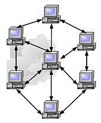
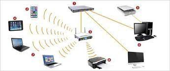
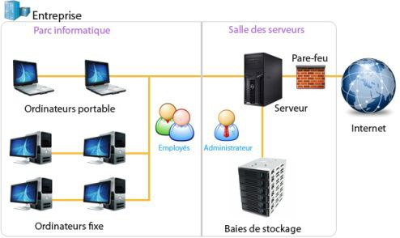

1) Introduction aux réseaux informatiques
Réseau (informatique) Un réseau informatique est un ensemble d'ordinateurs,
de terminaux et de périphériques autonomes connectés entre eux pour échanger
des informations numériques selon des règles bien définies. La mise en réseau
permet de relier des ordinateurs afin qu'ils puissent partager des ressources.

2) Caractéristiques de base d'un réseau :
La topologie, le débit, la distance maximale et le nombre de nœuds sont les
principales caractéristiques d'un réseau. La topologie définit l'architecture
d'un réseau et peut être physique ou logique. Le débit mesure la quantité de
données numériques transmises par seconde, la distance maximale dépend de la
technologie mise en œuvre, et le nombre de nœuds maximum que l'on peut
interconnecter est une autre caractéristique importante.
3) Terminologies en réseau:
Les stations de travail, les nœuds, les serveurs et les paquets sont des termes
courants en réseau. Un paquet est la plus petite unité d'information pouvant être
envoyée sur le réseau. Les réseaux peuvent être homogènes ou hétérogènes selon
que tous les ordinateurs sont de même constructeur ou non. Le débit mesure la
quantité de données numériques transmises par seconde.
4) Éléments d'un réseau:
Les ordinateurs équipés d'une carte de communication, les logiciels (navigateur,
client de messagerie, serveur web, etc.), les supports (câbles, prises, fibre optique,
etc.) et les équipements d'interconnexion (répéteur, concentrateur, commutateur,
routeur, etc.) sont les éléments de base d'un réseau.

5) Classification des réseaux :
Les réseaux peuvent être classifiés en fonction de différents critères. Par portée
(la distance), on peut distinguer les réseaux locaux (LAN), les réseaux métropolitains
(MAN) et les réseaux étendus (WAN). Les réseaux peuvent également être classés selon
leur architecture (client-serveur, poste à poste, etc.) et leur technologie (Ethernet,
Wi-Fi, etc.).
